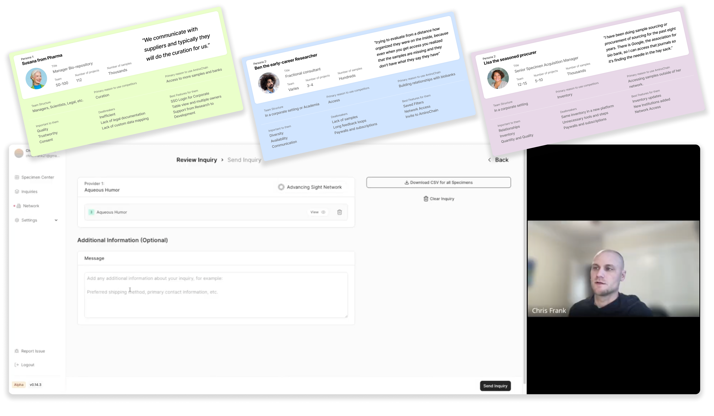
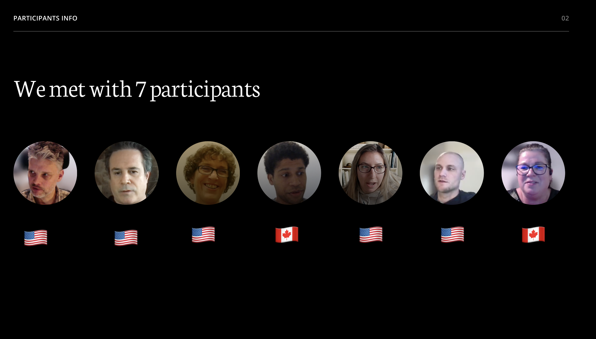
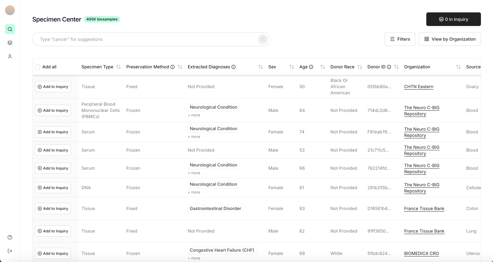
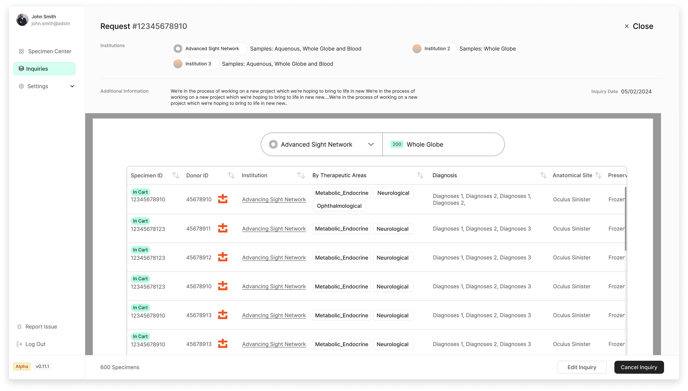
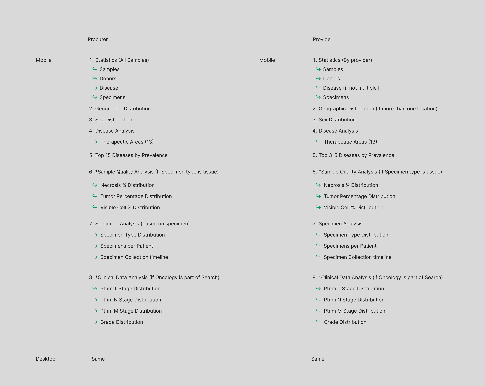
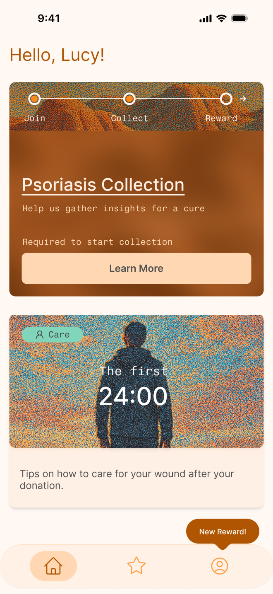
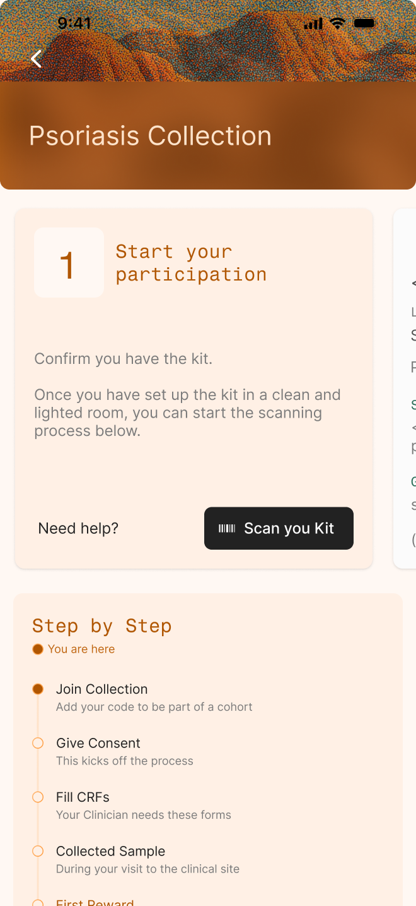
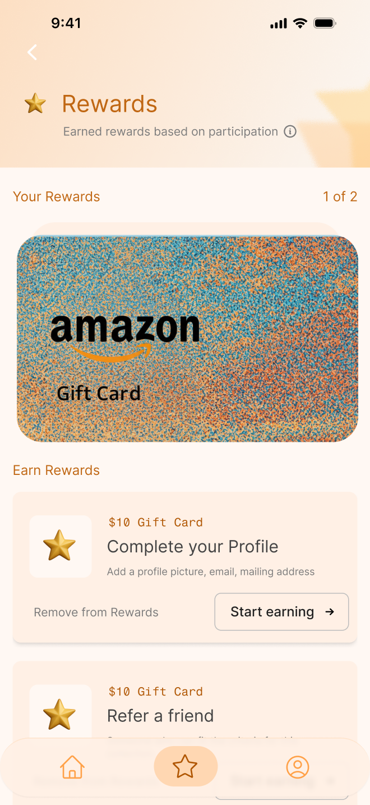

AminoChain
A B2C specimen marketplace connecting biobanks and researchers to human specimen collections, using blockchain to link donors directly to their samples.
Overview
Joined as employee #7, without a design process, brand, just an engineering prototype. Defined brand, product direction, and design system from Alpha through GA. Led strategy conversations across product and engineering to align on the right platforms: driving the pivot from web to native after identifying privacy constraints in collaboration with engineering.
Designed workflows for both in-person and mail-in specimen collection, bridging the digital product with physical operational processes. Established kickoffs, design reviews, and engineering handoff workflows from scratch, and hired external agencies to scale output before Series A.
Tools
For Product Design, Branding, Marketing and Design System

Prototyping work working in design systems
Marketing






PRODUCT
Designed the end-to-end experience for a 500K+ biosample marketplace across two user roles — Procurers and Providers. Defined data schemas for complex specimen types, establishing the information architecture that structured how biosamples were categorized, filtered, and surfaced across the platform.






MOBILE
Designed a consumer-facing mobile app for specimen donors built around longitudinal engagement. The core experience guided donors through a structured participation journey: Join, Collect, Reward, with a step-by-step timeline that surfaced the right task at the right moment, from consent and CRF completion to physical sample collection.
Rewards were integrated directly into the task flow as tangible incentives tied to completed actions, reinforcing participation at the moments most critical to collection compliance.
The visual direction intentionally contrasted the clinical context: warm, textured, human to reduce anxiety and build trust with donors contributing to medical research.



Prototype